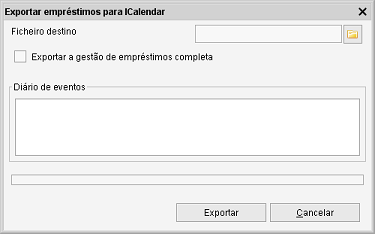

Exportar empréstimos para iCalendar
Caminho de menu: Ferramentas > Exportar empréstimos para iCalendar

Esta ferramenta exporta a informação dos empréstimos para um ficheiro iCalendar (ICS). Os ficheiros iCalendar podem
ser importados pela maioria dos programas de agenda/calendário (maioritariamente clientes de correio eletrónico xcom agenda).
Exportar ficheiro
Selecione o ficheiro destino (obrigatório).
Exportar a gestão de empréstimos completa
Se não estiver selecionada, só serão exportadas as alterações feitas desde a última
exportação:
1 - a primeira exportação contém todos os empréstimos (uma vez que ainda não há histórico
de exportações)
2 - a segunda exportação só vai conter novos empréstimos e empréstimos devolvidos.
Marque esta opção para exportar toda a gestão de empréstimos.
Não será mantido um histórico de empréstimos e o ficheiro exportado contém sempre todos os empréstimos.